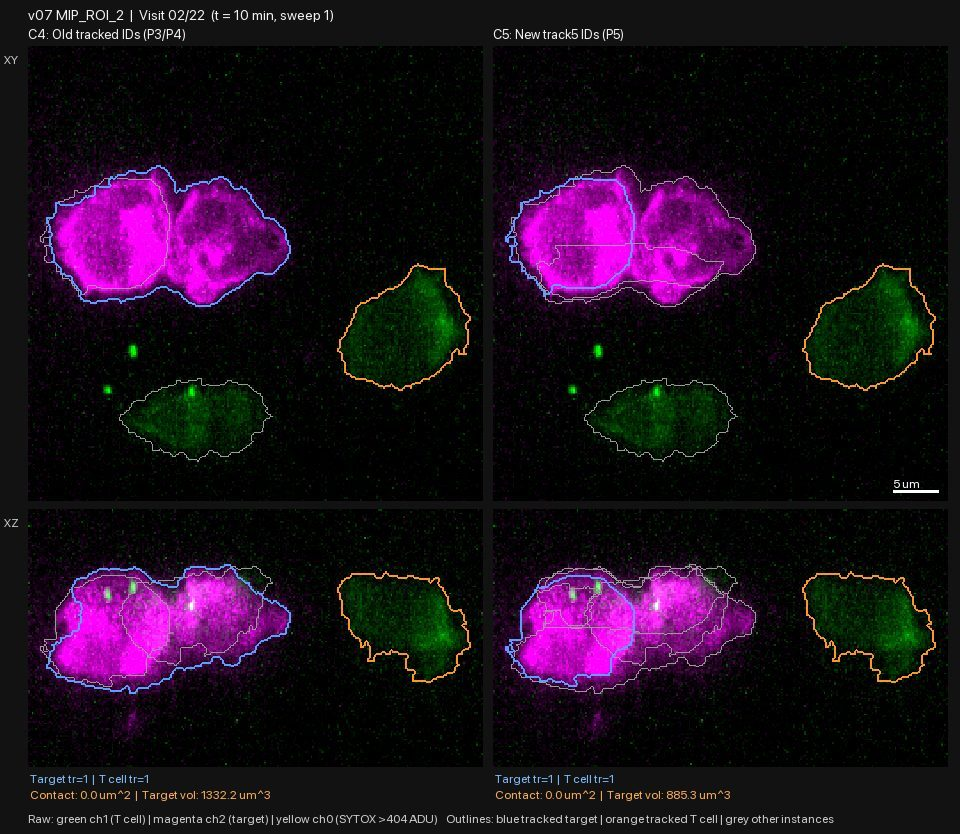
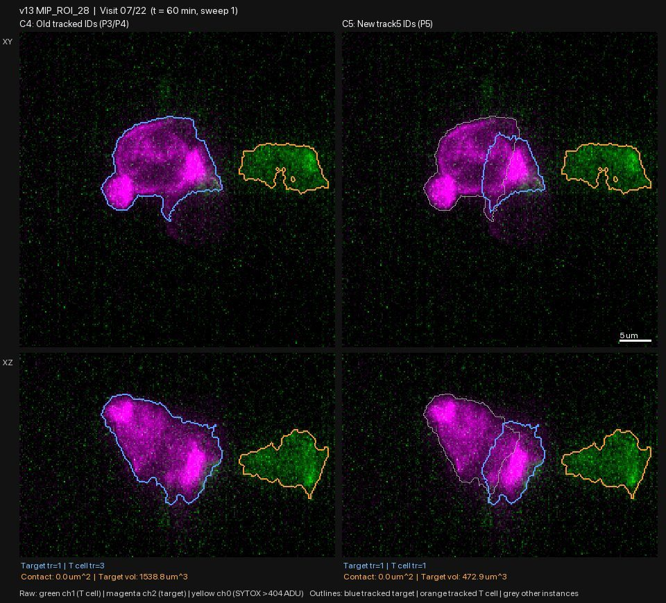
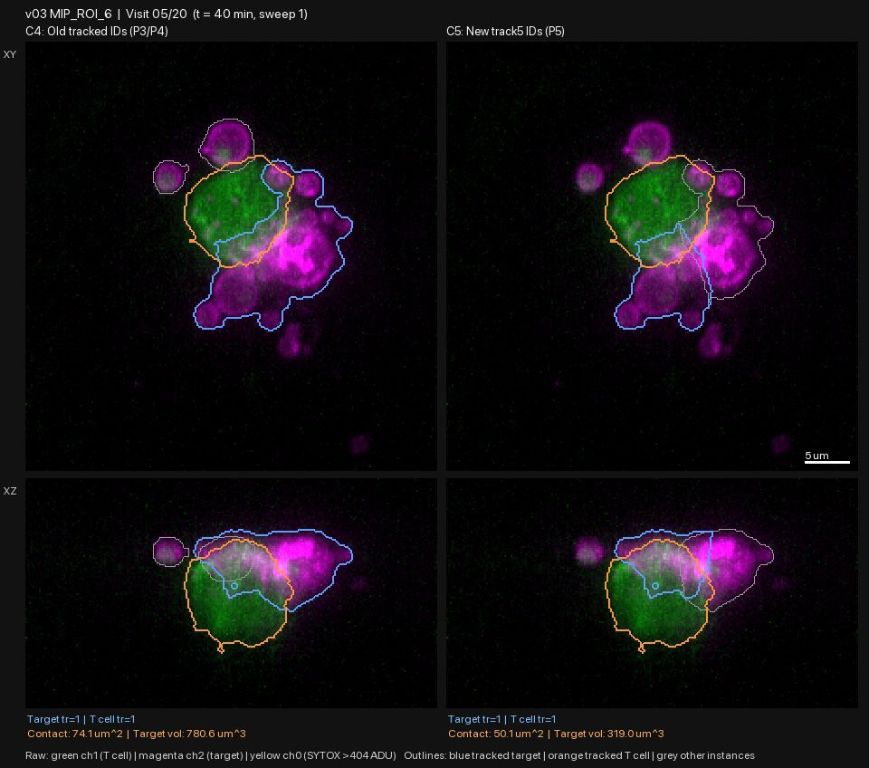
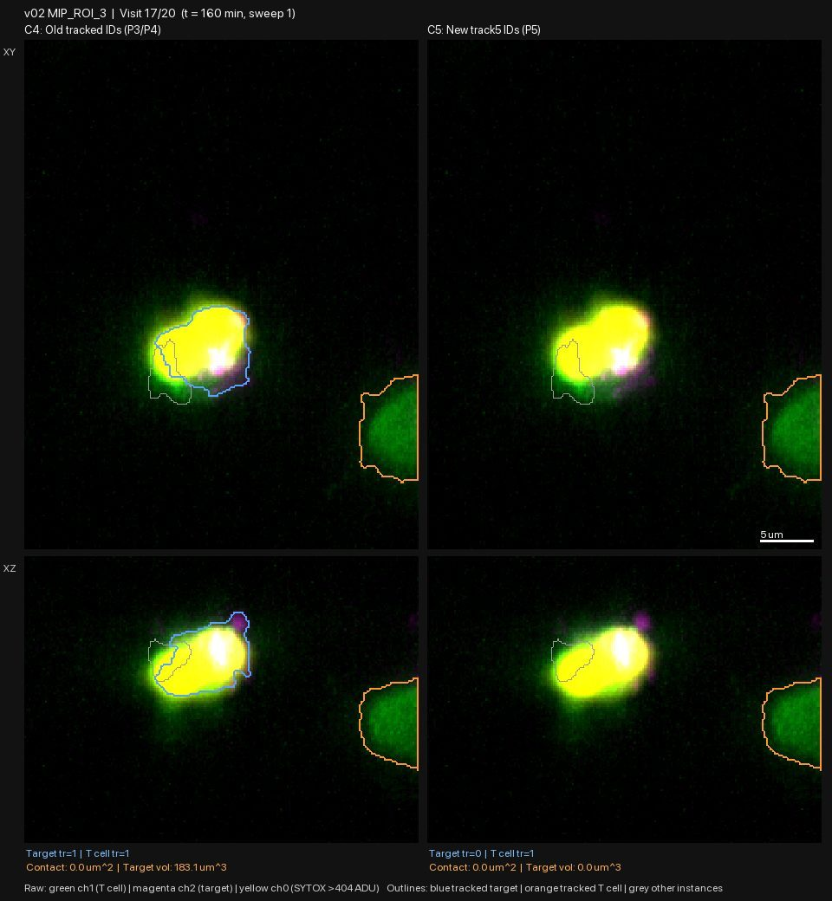

P5: the touching-cell splitter is rejected (worse as often as better); the new tracking gives a smaller gain than its ID counts suggested
| ID | 2026-10-29-04-p5-splitter-rejected-tracking-gain-small-merging-still-open | Date | 2026-10-29 |
|---|---|---|---|
| Gate | G1 | Status | reviewed |
| Author | claude | Reviewers | claude, independent-frame-reviewers |
| Signoff | — | Commits | b3b395d |
| Datasets | raw_volumes, lab_masks | Protocols | gallery-review@v1 |
| Galleries | — | Supersedes / By | — / — |
Question
P4 showed C4's outlines are good, but two failures dominate: touching tumour cells merge into one target, and the wrong cell is tracked as "the T cell" or "the target". Do the P5 fixes work, on all 20 chambers (8 pilot + 12 held-out)?
What was run
Two jobs by agy (Argon High), working from C4's cached outlines:
- C5 splitter (
src/seg/split5.py): splits touching tumour cells using the membrane signal and the lab's separate-cell masks, and removes non-cell objects (haze, wall beads). Ran on 419 visits; it split targets in 142 visits and removed objects in 107 visits. - Whole-series tracking (
src/seg/track5.py): the T cell is the large persistent green cell; the target is the tumour cell touched at first contact, followed to the end. agy reported 0 identity changes in all 20 chambers (old tracking: up to 10 in one chamber). - Movies and frames, C4 on the left and the new result on the right, in
figures/pilot/p5/(splitter plus tracking) andfigures/pilot/p5_track_on_c4/(tracking only, on C4's unchanged outlines).
What was looked at
Every frame of all 20 chambers, twice, by four fresh reviewers each time who had not seen my conclusions: once for the splitter plus tracking (419 visits), once for tracking alone (214 visits). I re-checked five of the key frames myself.
Observations
The splitter helps in some places and hurts in more. Over 419 visits the C5 target outline was better in about 17%, the same in about 60%, mixed in about 3%, and worse in about 20%. It is the same as C4 wherever there is one clean round cell.
Where it helps: two tumour cells with a visible neck are separated (v07 ROI 2 visits 1-3; v07 ROI 26 visits 1, 2, 6, 7; v05 ROI 8 visits 9 and 13), and fragment clutter and haze are removed.

Where it hurts:
- Cuts through single cells along straight or jagged lines that follow no visible gap, leaving a thin blue piece and a grey remainder. Worst in v03 ROI 6 (visits 1-12: the large bright cell the T cell attacks goes grey and the target shrinks to 30-45% of C4's volume), v05 ROI 8, v06 ROI 28, v13 ROI 28 and v11 ROI 15.


- Dead cells lose their outline. In v02 ROI 3 the dye-filled dead target has no outline at visits 16-19 (C4 keeps it at 112-183 µm³), and in v06 ROI 28 the dead cells go grey-only at visits 16-22. A dead cell is the kill evidence.

- Some real dim tumour cells were also dropped (v07 ROI 2 visits 7-9; v08 ROI 38 visits 14, 15, 20), and neighbouring T cells were merged into one outline in v08 ROI 38 (visits 1-6).
v12 ROI 23 is unresolved, not a failure. C5 drops the magenta body inside the green T cell in 12 visits. The reviewer scored this as worse. The open question from P4 is whether that body is a tumour cell at all, so I leave it as unresolved.
The tracking gain is smaller than agy's counts suggested. "0 identity changes" mostly means the same cell now keeps the same number. With outlines held fixed (C4), the new tracking picked a different, better cell in only a few places:
- fixed: v12 ROI 32 (the small dim object that was called the T cell in visits 1-4), v09 ROI 29, v12 ROI 23 (T cell), v07 ROI 26, v02 ROI 3 visit 20 (now correctly "no target" instead of a live cell);
- worse in: v05 ROI 8 visit 10 (a tiny unrelated cell far from the T cell), v06 ROI 28 visits 13-19, v10 ROI 28, v11 ROI 15, v08 ROI 38 visits 1-6 (two T cells merged), v01 ROI 32 visit 20;
- a dead dye-filled target keeps its outline through death in the five uncrowded chambers that have one (v02 ROI 3, v02 ROI 32, v03 ROI 6, v03 ROI 30, v04 ROI 24).
Merges in C4's outlines remain the main obstacle. Where two tumour cells share one outline (v07 ROI 2 visits 1-3, v03 ROI 6 visits 3-11, v05 ROI 8 visits 10-18, and most of v09 ROI 38, v10 ROI 28, v11 ROI 15, v13 ROI 28), the reviewers could not say which cell is "the target", so tracking cannot be judged there. In v05 ROI 8 and v06 ROI 28 the cluster is too crowded to name the first-contact cell by eye.
Decision
- C5 splitter: rejected. Not usable for measurements. P6 rewrites the splitter with these rules: no cut through a single cell unless it follows a visible membrane gap, no removal of dead (dye-filled), tracked or T-cell-touching objects, and no volume collapse of the target between neighbouring visits caused by a split.
- Whole-series tracking: kept as a candidate, not yet accepted. It must be re-reviewed on the P6 outlines.
- C4 stays the outline method. Cell choice in crowded chambers (v05 ROI 8, v06 ROI 28, and the faint dasatinib chambers v11 ROI 15 and v13 ROI 28) probably needs a decision rule agreed with the Fei lab, or exclusion from the measured set.
Open issues
- v12 ROI 23: what is the magenta body inside the green cell? (open since P4)
- How many of the 20 chambers are usable at all for measurement? The clean ones so far: v01 ROI 2, v02 ROI 3, v02 ROI 32, v03 ROI 30, v04 ROI 24, v08 ROI 24.
- The reviewers' counts are approximate (a few visits are counted twice). Per-visit
notes are archived in
lab/reviews/p5_splitter_frames_{a,b,c,d}.mdandlab/reviews/p5_tracking_frames_{a,b}.md. These are model reviewers' notes; I spot-checked five frames myself and they matched.